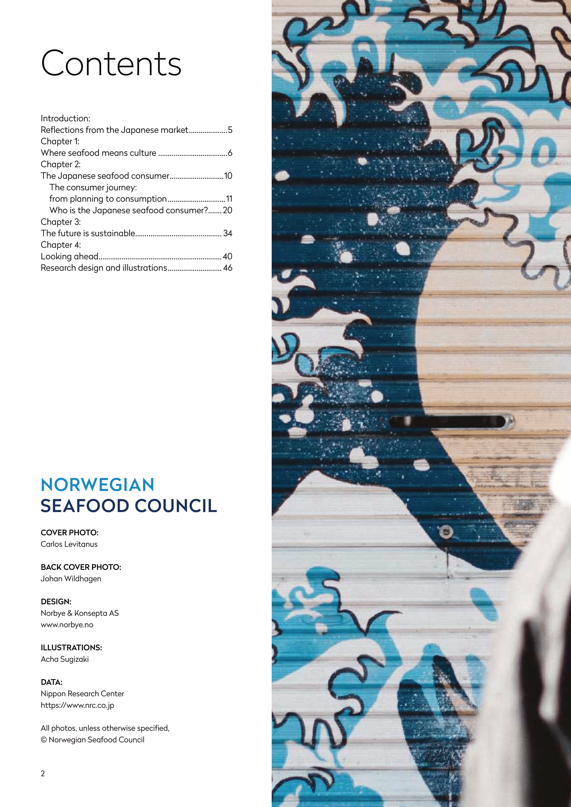
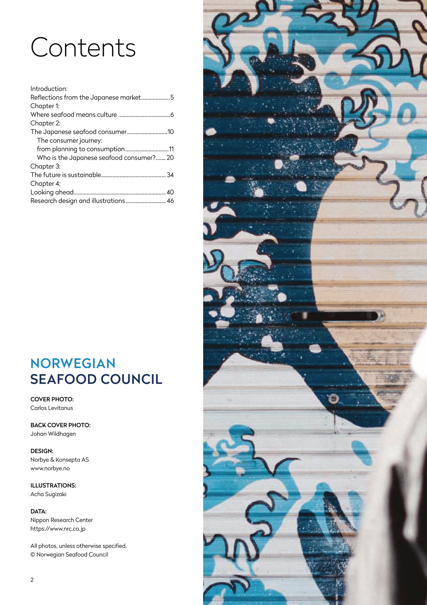
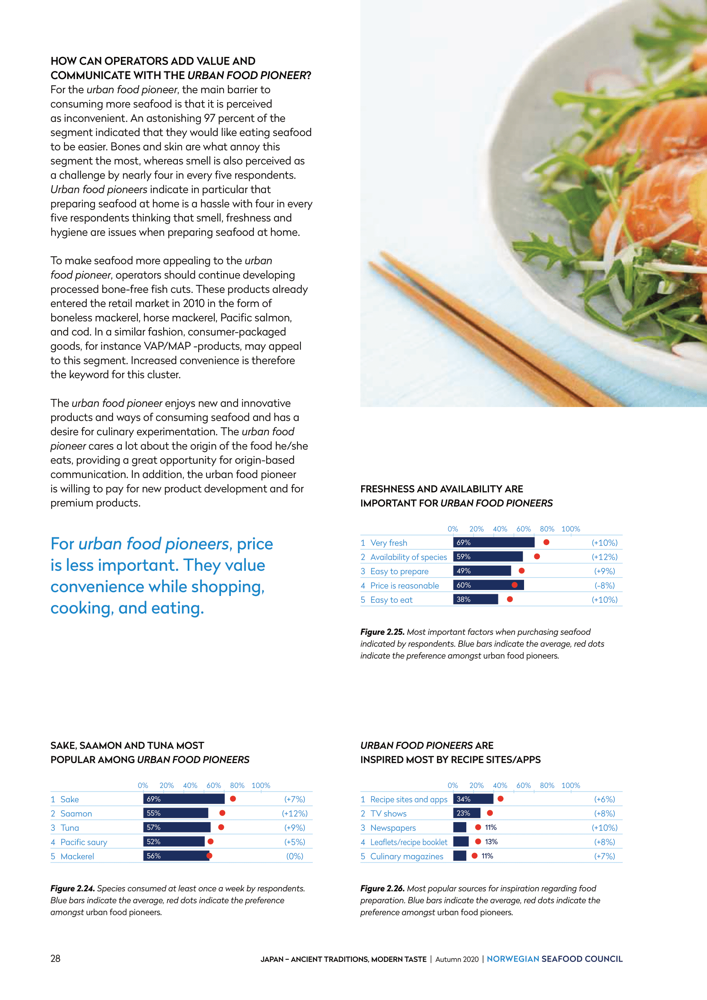
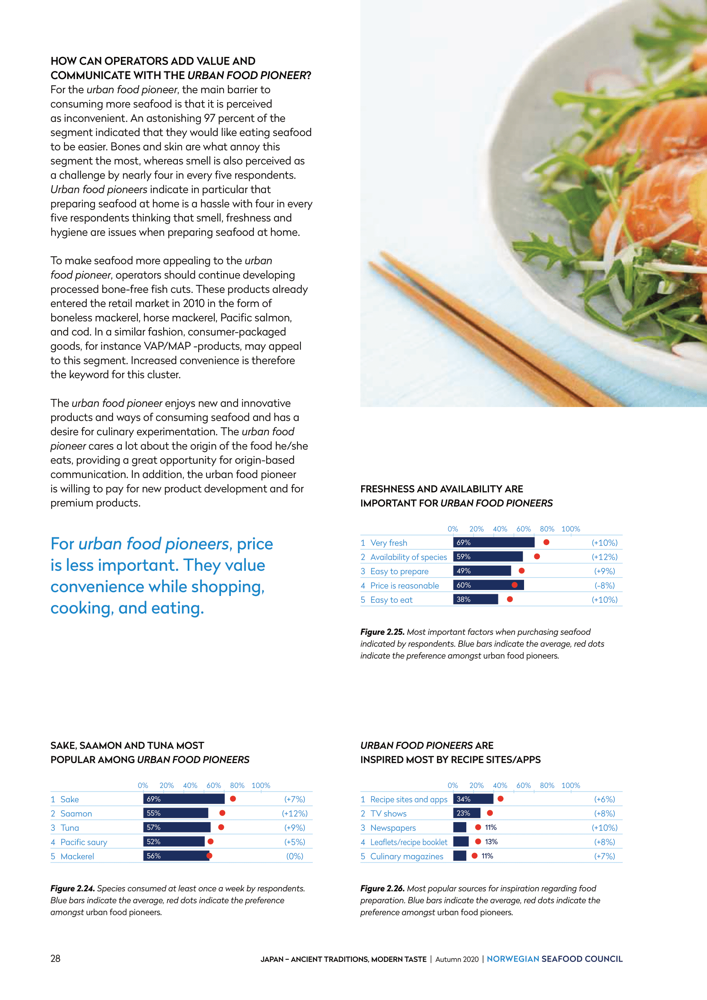
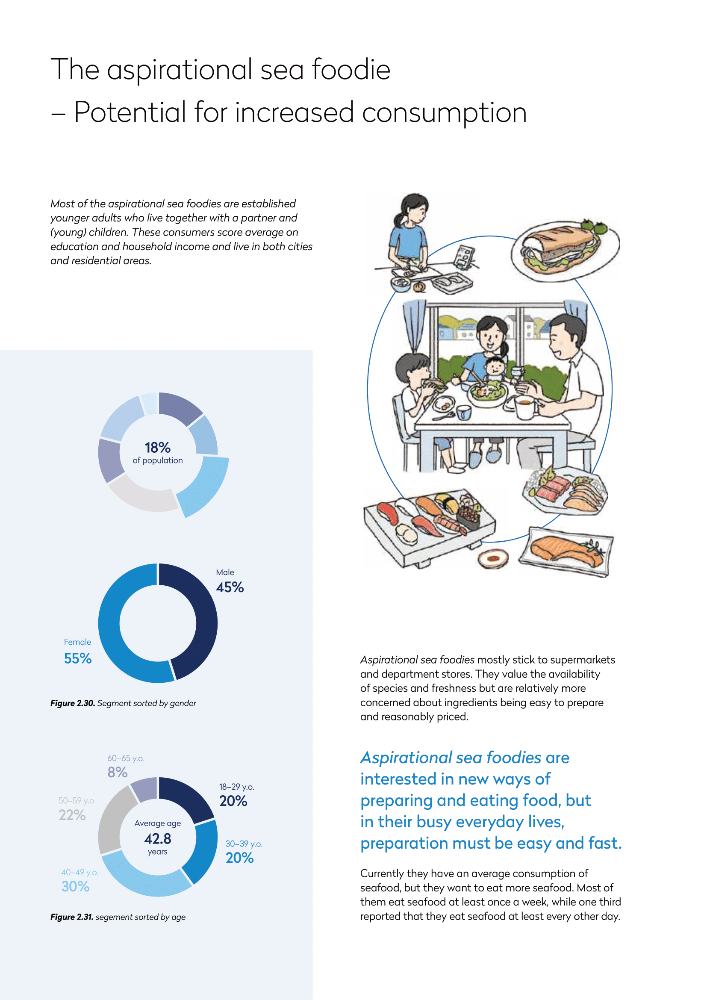

Project: Seafood
From idea to report
In the department "Market Insight" in the Norwegian Seafood Council, an advocacy group for Norwegian seafood, I mainly worked on producing various on seafood consumption worldwide. With the help of "the world's largest seafood database", one of the reports I worked one is called "Fish Market" and is published every other year. These reports focus on export markets that are important for Norwegian seafood, like Japan, which is one the largest markets for Norwegian salmon and mackerel.


Customer segmentation
In one study I worked with we delved deeper into seafood consumption in Japan, ans plit the market into different consumer groups. The aim of this study was not just to map seafood consumption, but also to detect how Norwegian seafood exporters could reach these different consumer groups. Through a Japanese agency, we had access to quantitave and qualitative survey data. Then, we split up the consumer market into seven identifiable consumer groups. Only three of these we regarded as interesting according to the study's aim, as we saw a potential for a high or increased consumption of seafood. Therefore, we delved deeper into these groups to find out who these consumers were and how they could be reached.
 



The fish lover was identified as a consumer with a high and stable consumption of seafood. This consumer group was not expected to increase its consumption, but was expected to maintain their consumption at a high level. This group was the oldest of all seven, with an average age just below 50. Most of themwere married and had a high income. The fish lover often buy seafood in specialist shops and fresh counters and are willing to pay for a high variety of fresh high-quality seafood. This is something thet Norwegian exporters could capitalize on.
 


The urban food pioneer was identified a a consumer group with mainly young, highly-educated consumers who live in cities and that enjoy tyring out new things. A large proportion of these consumers are women, usually unmarried and without children. Urban food pioneers can afford to eat out and are used to a great variety of food options from all over the world. However, they think preparing seafood at home is challenging and time-consuming. Therefore, this is an interesting consumer group for exporters that would like to introduce new products or new concepts to the market.


The aspirational seafoodie was identified as a consumer group consisting mainly of young adults with children. This group scores average on education and income and is charachterized by their ambition to eat more seafood. They mostly shop in grocery stores, and look for products that are fairly-priced and easy and quick to prepare. These are things exporters should keep in mind if they want to reach this consumer group.